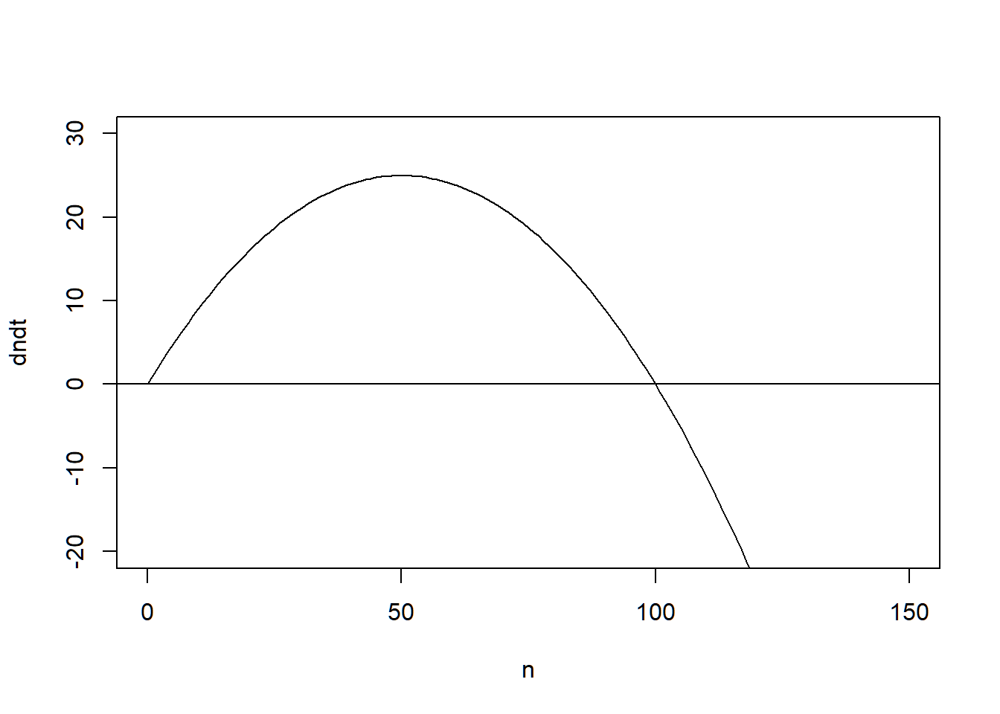
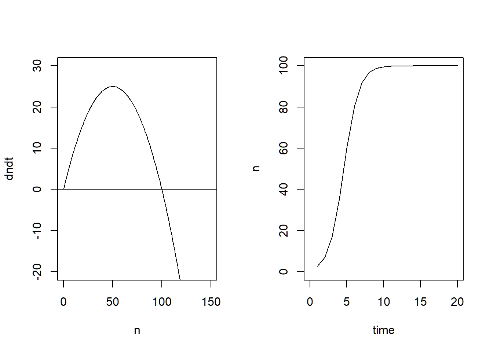

knitr::opts_chunk$set(echo = TRUE)
## Sets global chunk options for all R code chunks in the document
# echo = TRUE tells knitr to show the R code in the rendered output.
# So every code chunk will display its code unless you override it locally with echo = FALSE
# include = FALSE (in the chunk header) means:
# The setup chunk itself will not appear in the final output — neither its code nor its results are shown.
# But the code does run, so it can set options like this.Dynamic Systems 1
BIOS 13
Packages
Dynamic Systems
Exercise 1
Logistic equation: \(dn/dt = r0* n * (1 - n / K)\)
(1) Plot: Logistic growth equation
Plot the growth function (logistic equation) dn/dt = r0* n * (1 - n / K) against population size n.
Define values r0 and K in the beginning of the script (so they can be easily changed).
# Script plotting the logistic growth function
# Key model parameters:
r0 = 1 # intrinsic growth rate
K = 100 # carrying capacity
n = seq(0, 150, by = 1)
dndt = r0 * n * (1 - (n/K))
# Saving a base R plot
# Function() is necessary to be able to call on them later (!!)
# Any additions (here abline) need to also be saved inside the function
plot_dndt <- function() {
plot(n, dndt, type = "l", ylim=c(-20, 30), xlim=c(0,150))
abline(h = 0)
}
plot_dndt()
(2) Plot: Mathematical solution
The logistic equation has an exact mathematical solution given by:
\(n(t) = K / (1 + (K/n(0) - 1) * exp(-r0 * t))\)
EXTRA
Can you see that n -> K as t -> infinity?
(2)
# Define new variables
n0 =1
t = seq(1, 20, by = 1)
# All variables used for mathematical solution n(t)
K[1] 100n0[1] 1r0[1] 1t [1] 1 2 3 4 5 6 7 8 9 10 11 12 13 14 15 16 17 18 19 20# Pseudocode for function(t):
# n[1:t] = K / (1 + (K/n[1] - 1) * exp(-1*r0 * t))
# Function n(t)
n_t <- K / (1 + (K/n0 - 1) * exp(-1*r0 * t))
n_t [1] 2.672363 6.945316 16.866479 35.546099 59.985960 80.295715 91.719868
[8] 96.785670 98.792990 99.552552 99.834926 99.939209 99.977628 99.991769
[15] 99.996972 99.998886 99.999590 99.999849 99.999945 99.999980plot_n_t <- function() {
plot(t, n_t, type = "l",
ylim = c(0,100), xlim = c(0,20),
ylab = "n", xlab = "time")
}
plot_n_tfunction ()
{
plot(t, n_t, type = "l", ylim = c(0, 100), xlim = c(0, 20),
ylab = "n", xlab = "time")
}## Plotting both plots (from (1) and (2)) next to each other:
par(mfrow = c(1, 2))
# Call the functions with the plots incl. abline
# That is why you have/need the brackets () behind the fct name
plot_dndt()
plot_n_t()
(3) Numerical solution
Make a numerical test of the solution. In other words, calculate \(Δn/Δt\) for different points on the curve in exercise (2).
Make a suitable plot to compare the result to the correct values given by the model:
\(dn/dt = r0 * n * (1 - n/K)\)
The built-in R-function diff may come in handy. diff(x) calculates the difference between consecutive values of a vector x. Try for example diff(c(2,3,7)) or something similar.
# HOW does the function diff() work? What does it do?
diff(c(2, 3, 7)) [1] 1 4# = 1, 4
# b/c 3-1=1 and 7-3=4
test = c(2,4,8,16,32,64)
diff(test)[1] 2 4 8 16 32# lag = an integer indicating which lag to use
# differences = an integer indicating the order of the difference
diff(test, lag=1)[1] 2 4 8 16 32diff(test, lag=1, differences=2)[1] 2 4 8 16diff(test, lag=1, differences=4)[1] 2 4diff(test, lag=2)[1] 6 12 24 48# Recall the correct model (from (1)):
dndt = r0 * n * (1 - (n/K))
# Model parameters
r0 = 1 # intrinsic growth rate
K = 100 # carrying capacity
n = seq(1, 100, by = 1) # Population size of 1 to 100
n0 = 1
t = seq(1, 20, by = 1) # time = 20 years/time units